Mechanisms, Moderators, and Natural Experiments
What to do when you can’t randomize what you care about
Where we left off
Last week: an experiment closes back doors by design. Correll randomized a résumé cue.
Still to do: Craig & Richeson, who went one step further and manipulated the mechanism itself.
Today: finish that case, revisit mediation and moderation, then ask what to do when we can’t randomize at all.
Today’s route
| Part | Question |
|---|---|
| 1 · Craig & Richeson | How do you manipulate a mechanism, not just measure it? |
| 2 · Mediation, again | Why do liberals drink lattes, and what can a survey say about why? |
| 3 · Moderation, again | When does a strong argument beat a famous source? |
| 4 · Natural experiments | When we can’t randomize, what stands in for it, and what must we assume? |
| 5 · Two cases | What did a funding cutoff and a badly timed attack let researchers learn? |
Craig & Richeson — majority-minority status threat
Part 1 of 5 · Finishing Week 11: does the racial shift push Whites right?
More local Black population share predicts more White Republican registration.
Demographic change correlates with conservatism, but why?
Giles and Hertz (1994): Louisiana parish data, more local Black population share predicts more White Republican registration.
Majority-minority means no single racial or ethnic group exceeds 50% of the population; the national shift was then projected for 2042.
Real-world correlation. What’s actually driving it?
Source: Giles and Hertz (1994), cited in Craig and Richeson (2014).
What could explain the parish correlation?
Two boxes: Racial composition and White conservatism. What structures could produce Giles & Hertz’s correlation?
Political feedback — sign unclear
Earlier White racial politics could affect later composition through housing policy and migration—but this does not automatically predict the positive correlation.
or
Regional confounding
Regional history—such as plantation agriculture and segregation—could shape both local Black population share and White racial politics.
One correlation does not make all three stories equally strong

Political feedback makes composition endogenous, but regional history is the cleaner alternative explanation for the positive correlation.
The experiments answer a narrower question
Observational puzzle
What is the effect of actually living through demographic change on political behavior?
≠
Experimental question
What is the short-term effect of making the projected shift salient to White respondents?
The studies randomize exposure to a message—not racial composition, long-term media exposure, or voting behavior.
Status threat could connect the message to conservatism
Threat and uncertainty → conservatism (Jost et al. 2003), mostly studied with physical/mortality threats (post-9/11, terrorism).
Craig & Richeson’s extension: a slow, abstract, decades-out social status threat.
Source: Jost, Glaser, Kruglanski, and Sulloway (2003); Bonanno and Jost (2006).
What control isolates the majority-status implication?
You want to test whether it’s specifically the status framing doing the work, not just any news about demographic change. What’s your control condition?
An old Pew split becomes an experiment
Pew’s News Interest Index randomly assigned White political independents (n = 369) to two survey forms:
| Racial-shift condition | Racial-composition control |
|---|---|
| “Have you heard California is now majority-minority?” | “Have you heard Hispanics and Blacks are now similar in number nationally?” |
Outcomes: Republican versus Democratic party lean and general political ideology.
Researcher-caused, statistical solution — repurposed from an existing dataset, not purpose-built.
Source: Craig and Richeson (2014), p. 1191; Pew Research Center (2001).
The corrigendum weakens Study 1
A 2015 corrigendum corrected a probability-weighting error in Studies 1 and 2 — frequency weights were mishandled as probability weights in the statistical software.
- National party lean: p = .081
- General ideology: no effect
- West subsample: n = 49, p = .063
The corrected Study 1 evidence is inconclusive. Later studies must carry the argument.
Source: Craig and Richeson (2015), Psychological Science, 26(6), 950–952.
What does Study 1 still leave unresolved?
Before Study 2: what does Study 1 not establish yet?
- The corrected party-lean evidence is inconclusive, and ideology did not move.
- No mechanism was measured.
- Outcomes were self-reported attitudes, not behavior.
- One opportunistic dataset cannot establish robustness across treatments and samples.
Study 2 builds the experiment the theory needed
National probability-based online sample: N = 620 overall; 415 White respondents in the focal analysis.
| Racial-shift treatment | Societal-change control |
|---|---|
| Census press release: racial minorities projected to become a majority by 2042 | Press release about increasing geographic mobility |
Outcomes: conservative endorsement of race-related and race-neutral policies.
Candidate mediators: group-status threat, system threat, system justification, and uncertainty.
Study 2: policy attitudes shifted, but not every item did
| Outcome index | Corrected result |
|---|---|
| Overall conservative policy endorsement | Shifted conservative (p = .011) |
| Race-neutral policies | Shifted conservative (p = .025) |
| Race-related policies | Borderline (p = .052) |
| Immigration and citizenship items | No reliable individual-item effect |
Only group-status threat changed by condition and carried a detectable indirect effect.
Source: Craig and Richeson (2014), pp. 1192–1194, Table 2.
Measuring threat cannot prove that it carries the effect
Controlling for or analyzing a measured mediator can be biased even in a randomized experiment — unmeasured confounding between the mediator and the outcome is still possible.
What would fix it?
Source: Rohrer (2018), p. 38 (Week 10); Druckman (2023), pp. 40–42 (Week 11).
How would you change threat while holding information constant?
You need to manipulate the status implication while holding the demographic information constant. What’s your third condition?
Reassurance changes the status implication
White U.S. MTurk participants: Study 3a n = 180; Study 3b n = 198.
| Control | Status-threat | Assuaged-threat |
|---|---|---|
| Geographic-mobility article | Racial-shift article | Same racial-shift article + Whites’ relative status will remain stable |
3a outcomes: ideology plus race-related and race-neutral policies
3b outcomes: ideology plus race-neutral policies only
Manipulation check: perceived threat was higher in status-threat than in both other conditions; control and assuaged-threat did not differ.
The added paragraph is an experimental lever on the proposed mediator—not literal assignment of experienced threat.
Source: Craig and Richeson (2014), pp. 1194–1195.
The assuaging paragraph usually eliminates the shift
| Result | Study 3a | Study 3b |
|---|---|---|
| Status-threat vs. control | More conservative policies and ideology | More conservative ideology; policy contrast marginal (p = .066) |
| Status-threat vs. assuaged | More conservative policies and ideology | More conservative policies and ideology |
| Control vs. assuaged | No detectable difference | No detectable difference |
The replicated ideology pattern is strongest; the Study 3b policy comparison with control is weaker.
Source: Craig and Richeson (2014), Table 3.
The reassurance condition weakens one link in the chain
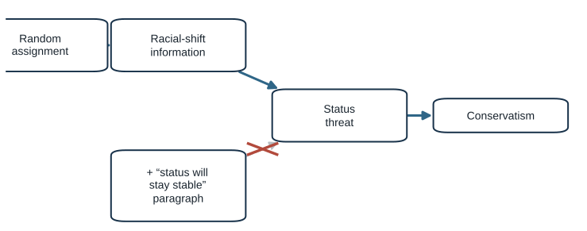
The mechanism evidence is stronger, but not definitive
The mechanism experiment strengthens the claim, but it still leaves open:
- Brief self-reported attitude changes are not voting or durable ideological realignment.
- Most corrected effects are small to modest, not wholesale partisan conversion.
- Studies 3a/3b are heavily male, young MTurk samples.
- Immigration and citizenship attitudes did not reliably move in Study 2.
- The reassurance paragraph may change more than status threat alone.
- Repeated, partisan real-world coverage may operate differently from one press release.
What did each manipulation actually identify?
What did Correll’s randomization close? What did Craig & Richeson’s mechanism manipulation address that measured mediation could not?
Mediation and moderation ask different questions
Part 2 of 5 · Mediation, again
Mediation asks how an effect travels. Moderation asks when, or for whom, it holds.
Mediation: how does the effect travel?
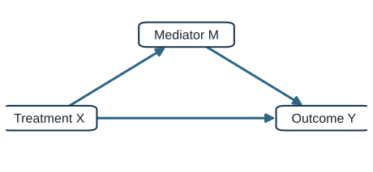
- Total effect: every causal path from X to Y
- Indirect effect: the part that runs through M
- Direct effect: the part that does not
Craig & Richeson manipulated M. Most studies only measure it.
Do liberals really drink more lattes?
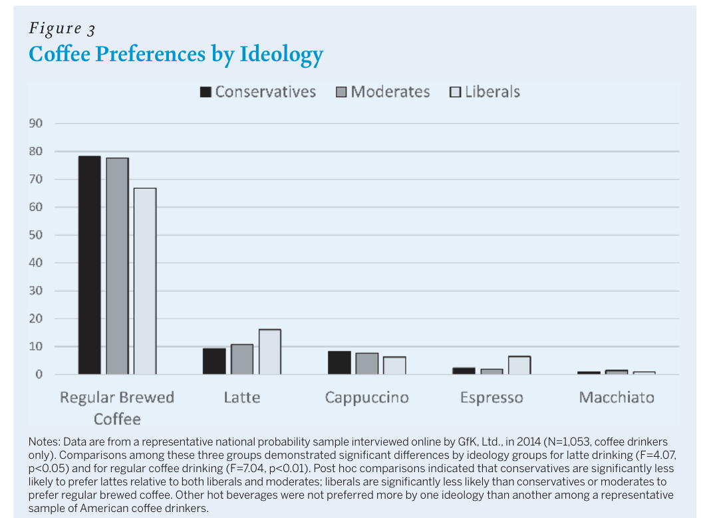
A national probability sample, 2014 (GfK). Coffee drinkers only: N = 1,059.
“Which drink would you order at a coffee shop?”
Prefer a latte: liberals 16%, moderates ~11%, conservatives 9%.
The stereotype is real. Why does it hold?
Source: Mutz and Rao (2018), PS: Political Science & Politics 51(4), Figure 3.
Four candidate explanations
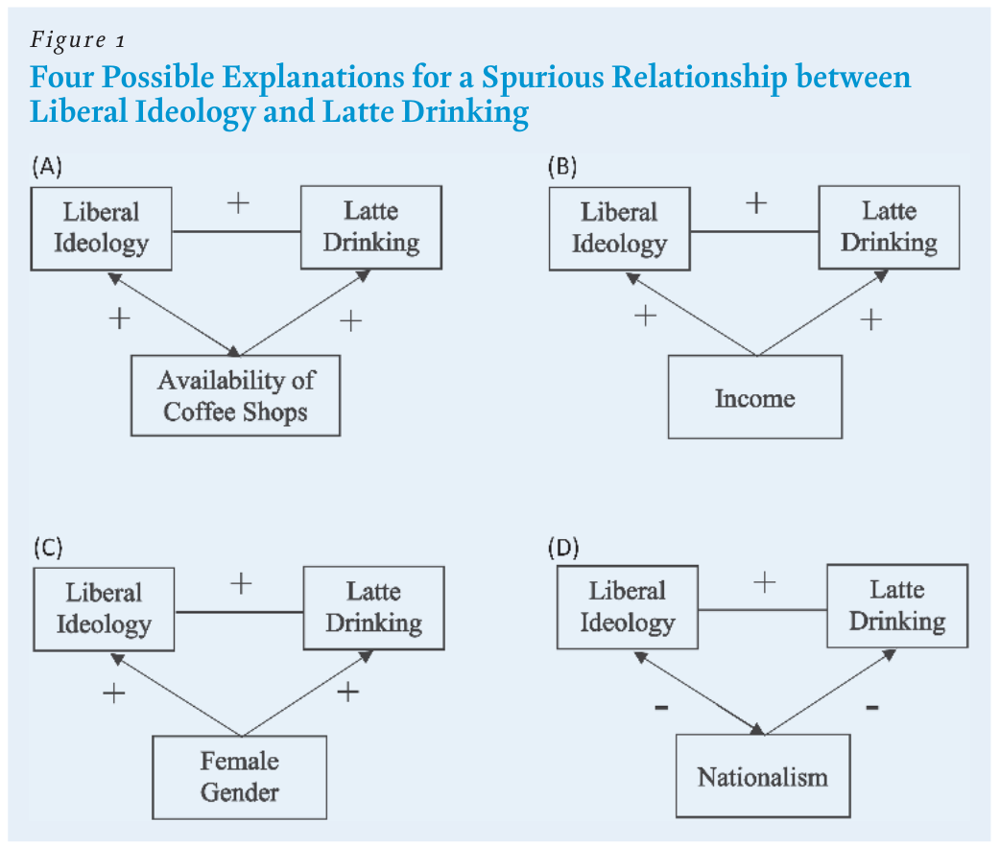
The authors call every one of these a reason the link might be spurious. Are they all the same kind of variable?
Source: Mutz and Rao (2018), Figure 1.
Which are confounders and which are mediators?
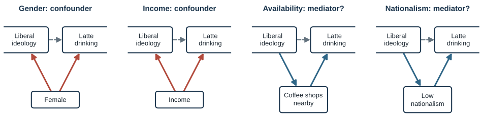
Same regression, different meaning. Controlling for a confounder removes bias. Controlling for a mediator removes part of the effect.
What happens to the ideology coefficient?
| Model | Variable added | Ideology coefficient (SE) | N |
|---|---|---|---|
| Baseline | none | 0.08 (0.03) * | 1,059 |
| A | Starbucks in ZIP code: 0.09 (0.03) * | 0.08 (0.03) * | 1,059 |
| B | Income: 0.05 (0.01) *** | 0.08 * | 1,059 |
| C | Female: 0.26 (0.10) * | 0.08 (0.03) * | 1,059 |
| D | Nationalism: −0.38 (0.09) *** | 0.01 (0.04), n.s. | 896 |
| All four | all of the above | 0.01 (0.04), n.s. | 896 |
Only nationalism absorbs the ideology gap. Authors: nationalism “most parsimoniously explain[s] this relationship.”
Source: Mutz and Rao (2018), Table 1 (probit models); quotation p. 766.
Nationalism explains the gap. What kind of variable is it?
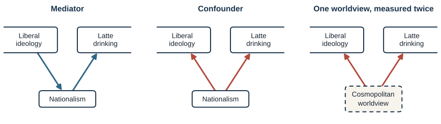
All three pictures produce the same shrinking coefficient. A cross-sectional survey cannot tell them apart.
What the latte study can and cannot show
Shows
The ideology–latte gap is real.
Availability, income, and gender do not account for it.
Nationalism is strongly associated with both.
Does not show
That nationalism carries an effect of ideology.
That drinks are avoided because they “sound foreign” (never measured).
That the drop from 0.08 to 0.01 is significant (not tested; N also falls to 896).
How would you test the “sounds foreign” mechanism the way Craig & Richeson tested status threat?
Moderation: when does an effect hold?
Part 3 of 5 · Moderation, again
A moderator does not carry the effect. It changes how big it is.
Moderation in a DAG
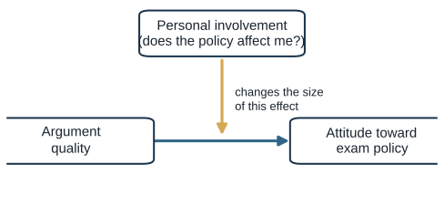
- A moderator is not on the path from X to Y.
- Standard DAGs do not draw moderation. Here the arrow points at the arrow.
- In a regression: an interaction, X × Z.
Petty, Cacioppo & Goldman: the design
145 University of Missouri undergraduates heard a taped message: seniors should have to pass a comprehensive exam to graduate.
| Factor | Levels |
|---|---|
| Personal involvement | exams would start next year (affects you) vs. in ten years (doesn’t) |
| Argument quality | 8 strong arguments (data, statistics) vs. 8 weak ones (quotations, opinion, anecdotes) |
| Source expertise | Carnegie Commission on Higher Education vs. a local high-school class |
Outcome: agreement with the exam policy (standardized index). A 2 × 2 × 2 experiment, every factor randomized.
Source: Petty, Cacioppo, and Goldman (1981), JPSP 41(5), pp. 849–850.
Results: involvement flips what persuades
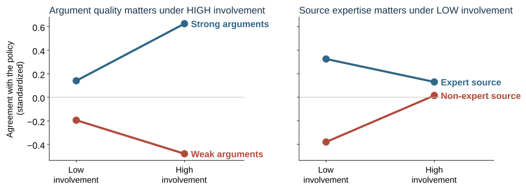
Involvement × argument quality: F(1, 137) = 6.05, p < .02. Involvement × expertise: F(1, 137) = 3.92, p < .05.
Source: Petty, Cacioppo, and Goldman (1981), Figure 1 and Table 1; points are Table 1 means averaged over the third factor.
Reading the interaction
High involvement
People think about the arguments.
Argument quality matters; the source barely does.
Low involvement
People use a shortcut.
The source’s credentials matter; argument quality matters less.
No single “effect of argument quality.” Its size depends on involvement. That is moderation.
Mediator or moderator?
| Mediator | Moderator | |
|---|---|---|
| Question | How does X affect Y? | When / for whom does X affect Y? |
| Position | on the path X → M → Y | off the path; changes the X → Y arrow |
| Timing | after X | before X (or fixed) |
| Analysis | indirect and direct effects | X × Z interaction |
| Today’s case | nationalism in the latte study | involvement in Petty et al. |
| Strongest design | manipulate M (Craig & Richeson) | randomize Z, or both X and Z |
When you can’t randomize
Part 4 of 5 · Natural experiments
Sometimes nature, a lottery, a rule, or bad luck assigns the treatment for us.
What makes it a natural experiment?
Treatment vs. comparison
Like any experiment, two or more groups are compared.
Random or as-if random
Assignment is unrelated to the outcome-relevant traits of the units.
Not controlled by the researcher
A lottery, a rule, nature, or history did the assigning.
Dunning: natural experiments are “neither natural nor experiments.” The as-if random claim has to be argued, not assumed.
Source: Dunning (2012), ch. 1.
The first natural experiment: John Snow and cholera
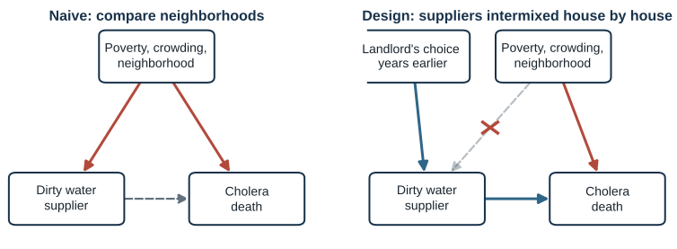
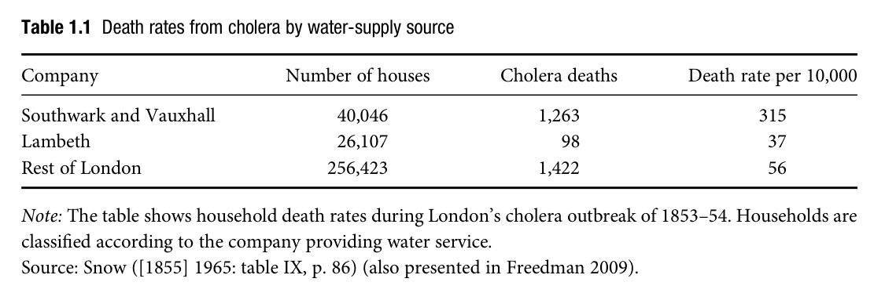
Deaths per 10,000 houses: 315 (Southwark & Vauxhall) vs. 37 (Lambeth).
Source: Dunning (2012), ch. 1, Table 1.1, pp. 12–15.
The natural-experiment toolbox
| Design | What creates the variation | Example |
|---|---|---|
| Lottery | an actual random draw, run by someone else | Swedish lottery prizes; Vietnam draft |
| As-if random event | nature, history, or administration | Snow’s water companies; Argentine land titles |
| Regression discontinuity | a cutoff on a score | merit certificates; grant funding thresholds |
| Instrumental variables | a random push toward treatment | judge assignment; draft lottery → service |
| Before / after an event | timing of an unexpected shock | attacks during survey fieldwork; TV’s arrival |
1. Lotteries
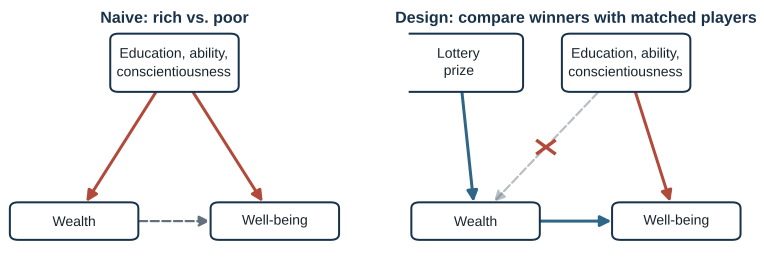
Swedish lottery players: winners vs. players with the same number of tickets. Vietnam draft: eligible white men earned $358 less in 1984 (about 2%).
Sources: Grosz et al. (2024), Box 1 (Lindqvist et al. 2020); Dunning (2012), pp. 8–9 (Angrist 1990).
2. As-if random events
Assignment happened through a process unrelated to people’s traits.
- Argentine land titles: a 1984 law expropriated land for squatters; some owners sued, delaying titles for some plots. Titled families invested more in housing and children’s schooling, with no gain in credit.
- Sibling sex: whether your sibling is a brother or a sister is set at conception (85,887 people, 9 countries).
- Earthquakes, seating charts, school-entry dates.
The burden: show assignment was unrelated to anything that affects the outcome. Check balance.
Sources: Dunning (2012), pp. 9–12 (Galiani and Schargrodsky); Grosz et al. (2024), p. 9 (Dudek et al. 2022).
3. Regression discontinuity
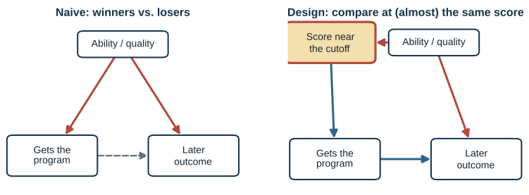
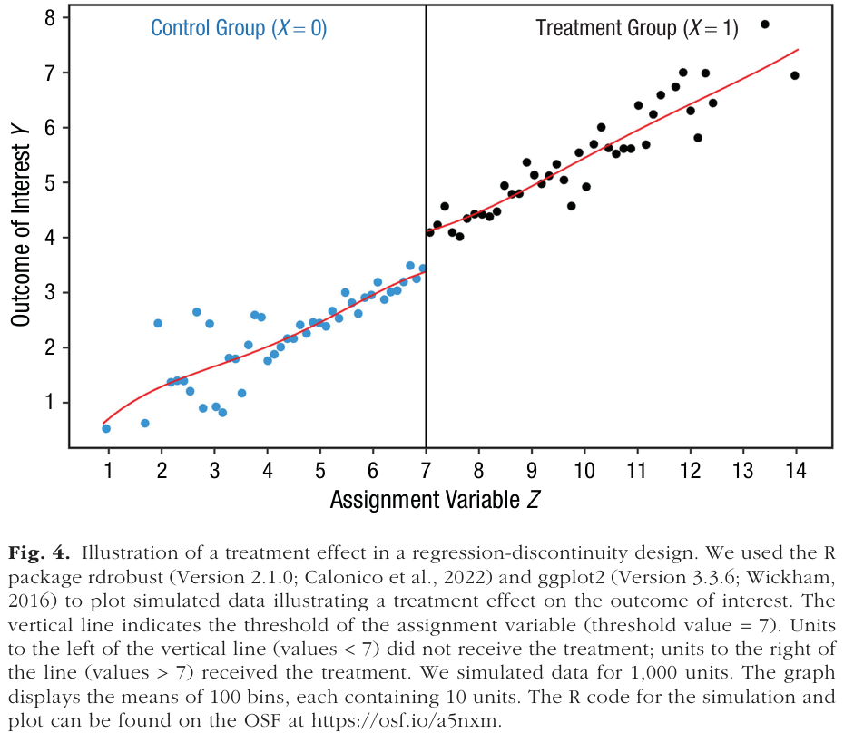
People just above and just below a cutoff are nearly identical, except one got the treatment.
Sources: Grosz et al. (2024), Figure 4 and Box 3 (Thistlethwaite and Campbell 1960).
4. Instrumental variables
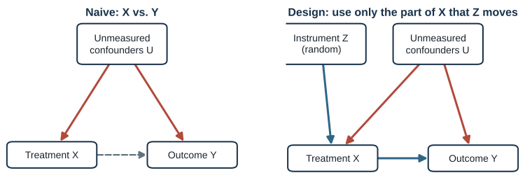
Defendants randomly assigned to harsher vs. more lenient judicial calendars: incarcerated 65% vs. 23%. Compare their later outcomes, scaled by that difference.
Sources: Grosz et al. (2024), Figure 3 and Box 2 (Green and Winik 2010); Dunning (2012).
5. Before and after an event
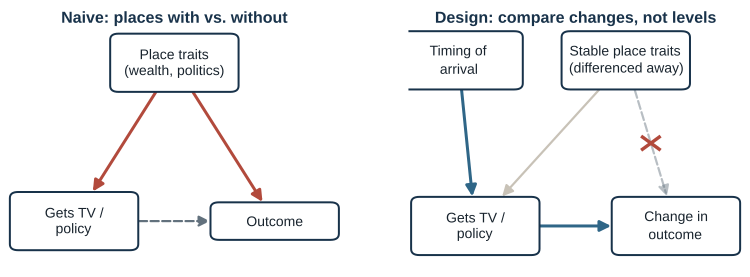
Compare changes, not levels: TV’s staggered arrival (Week 10), Fox News entering local cable systems, or respondents interviewed just before vs. after an unexpected attack.
What each design assumes, and how to check
| Design | Key assumption | How to probe it |
|---|---|---|
| Lottery | assignment really random (within strata) | verify the mechanism; balance on pre-treatment traits |
| As-if random | assigner didn’t select on outcome-relevant traits | balance tables; knowledge of how assignment happened |
| Regression discontinuity | no precise sorting around the cutoff; outcomes smooth through it | density test; balance at the cutoff; placebo cutoffs |
| Instrumental variables | instrument affects Y only through X; it moves X | first-stage strength (testable); exclusion (argue) |
| Before / after | no other change at the same time; similar paths before | pre-trends; placebo dates; who was reached when |
Every design trades one assumption (no confounding) for others. The question is which assumption is more believable.
Not every “natural experiment” is one
Connecticut speeding crackdown, 1955
Deaths fell after a crackdown, but the crackdown followed a record bad year. Regression to the mean, not as-if random.
UN peacekeeping
Missions compared with matched cases on measured variables. Matching is not as-if random: unmeasured differences remain.
Ask: who or what decided treatment, and could it have responded to the outcome?
Source: Dunning (2012), pp. 19–21; Campbell and Ross (1968).
Judging a natural experiment
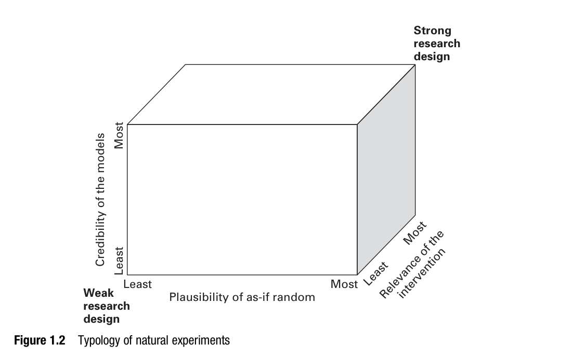
- Plausibility of as-if random: how convincing is the assignment story?
- Credibility of the models: does the analysis rest on simple comparisons or heavy modeling?
- Substantive relevance: does the answer speak to the question we care about?
Lotteries score high on (1) but often low on (3): lottery winnings are not earned income.
Source: Dunning (2012), Figure 1.2, p. 31.
Psychology rarely uses them
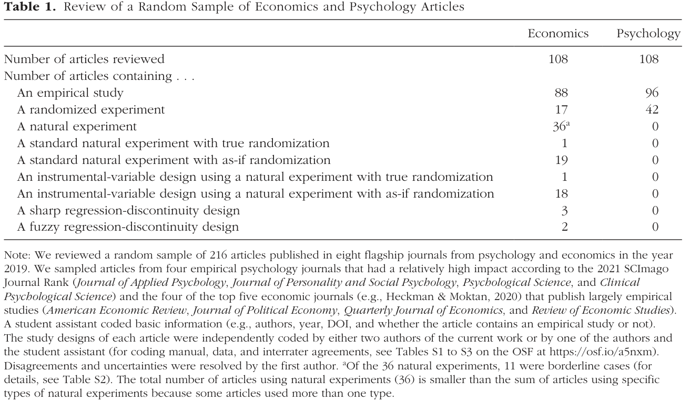
0 of 108 psychology articles vs. 36 of 108 economics articles used a natural experiment.
Source: Grosz et al. (2024), Table 1, p. 6.
Two natural experiments up close
Part 5 of 5 · Two cases
A funding cutoff and a badly timed attack. What did each design solve, and what did it assume?
Bol et al.: does winning a grant make you win more grants?
The Matthew effect: “to everyone who has, more will be given.” Do early winners pull ahead because of merit or because of the win itself?
Since 2000, the Dutch Veni/Vidi/Vici program concentrated €2.4 billion in 3,660 applicants.
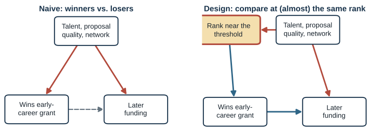
Source: Bol, de Vaan, and van de Rijt (2018), PNAS 115(19): 4887–4890.
Near-winners and near-losers looked the same before
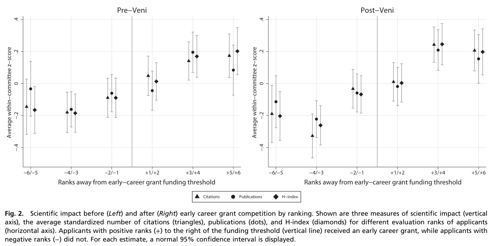
No jump at the threshold in publications, citations, or h-index, before or after the grant.
Source: Bol et al. (2018), Figure 2.
…but their careers diverged
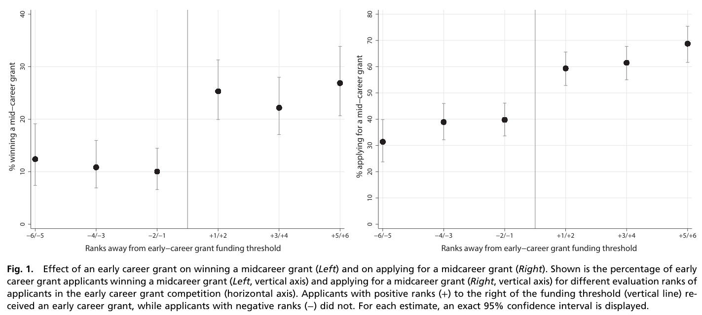
Won a mid-career grant: 10% (near-losers) vs. 26% (near-winners). Applied for one: 40% vs. 59%.
Source: Bol et al. (2018), Figure 1, pp. 4888–4889.
The gap kept growing
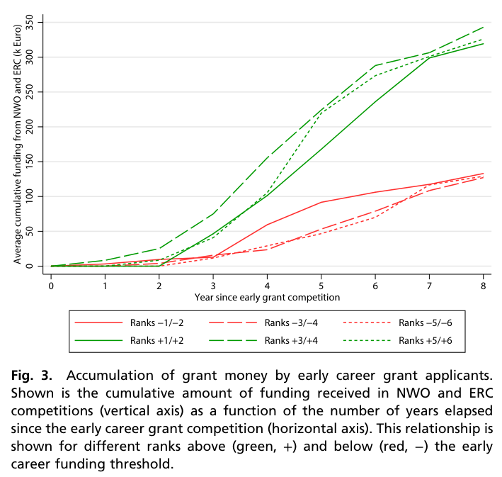
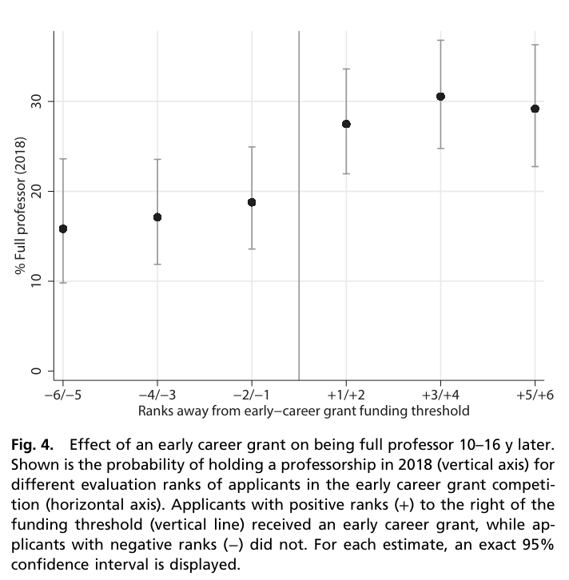
Extra funding: about €40,000 after 4 years, about €180,000 after 8 (beyond the Veni itself). Full professor by 2018: 19% vs. 28%.
Source: Bol et al. (2018), Figures 3 and 4, p. 4889.
Why? Participation and status
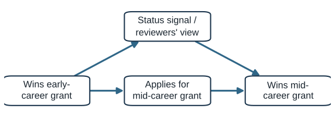
- Near-losers applied less (40% vs. 59%).
- Among those who applied, near-winners still won more (about 44% vs. 25%).
Discouragement explains part of the gap. A status signal may explain the rest.
Source: Bol et al. (2018); win rates among applicants calculated from Figure 1 (reading summary).
What the funding RD assumes
| Assumption | Why it might fail | Evidence |
|---|---|---|
| Similar just above and below | committees might push favored applicants over the line | no jump in prior publications, citations, h-index |
| No sorting around the threshold | applicants can’t choose their rank; committee can decide borderline cases | addressed indirectly; no density test reported |
| Losers didn’t leave science | near-losers might exit, lowering their later funding mechanically | checked in the supplement (not in our PDF) |
| Local estimand | applies to applicants near the threshold | effect for the best or worst applicants unknown |
Balcells & Torrats-Espinosa: do terrorist attacks change elections?
Two questions: do attacks change whether people vote, and whom they vote for?
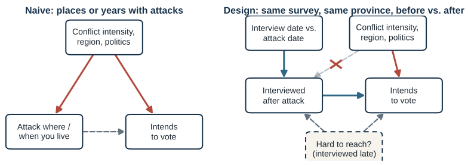
Source: Balcells and Torrats-Espinosa (2018), PNAS 115(42): 10624–10629.
The design: eight attacks during survey fieldwork
- 8 ETA attacks (1989–1997) during 7 CIS surveys
- Compare respondents within the same survey and province, interviewed before vs. after
- Windows of ±1, ±3, ±5 days; respondents interviewed on the attack day dropped
- Outcomes: would you vote “tomorrow”? would you vote for the incumbent?
N = 3,810 (±1 day), 9,135 (±3), 11,848 (±5).
Source: Balcells and Torrats-Espinosa (2018), pp. 10625, 10628; SI Table S1.
People said they would vote, but not for anyone in particular
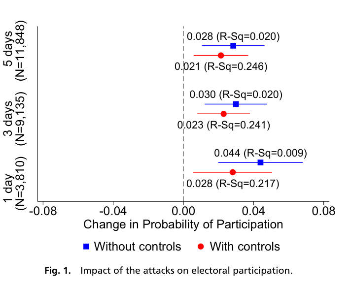
Turnout intention: +2.8 pts (±1 day, controls); +4.4 without.
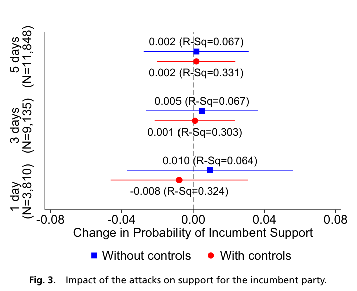
Incumbent support: between −0.8 and +1.0 pts, never significant.
Source: Balcells and Torrats-Espinosa (2018), Figures 1 and 3.
Who was activated?
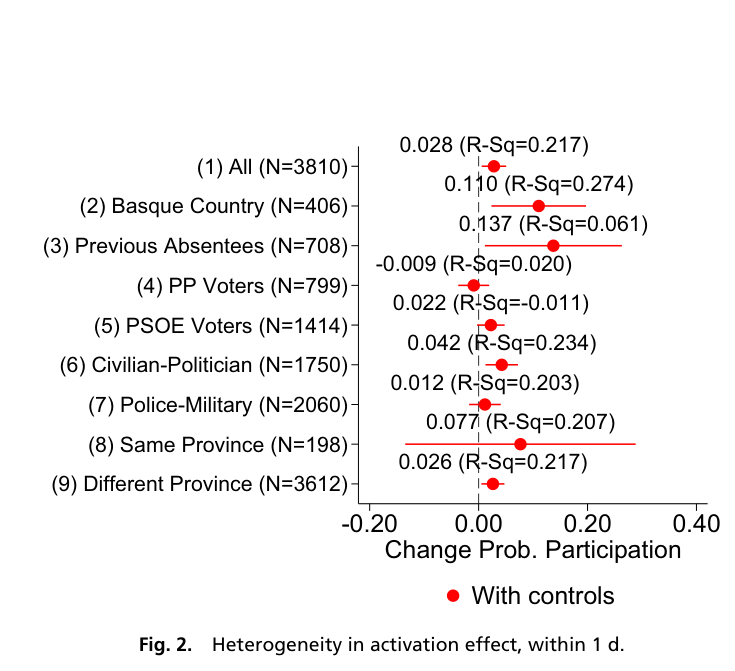
Prior abstainers +13.7 (N = 708) · Basque residents +11 (N = 406) · civilian or politician victims +4.2 vs. police or military +1.2
Source: Balcells and Torrats-Espinosa (2018), Figure 2; SI Table S6.
What the timing design assumes
| Assumption | Why it might fail | Evidence |
|---|---|---|
| Interview timing as-if random | harder-to-reach people interviewed later | balance table: joint test p = .18, but post-attack respondents 2 pts less likely to be prior abstainers |
| No differential nonresponse | attacks change who agrees to answer | contact attempts and refusals similar (reported in prose only) |
| Controls are pre-treatment | “prior vote” is recalled after the attack | the 4.4 → 2.8 drop comes from this control |
| Nothing else changed that day | other news, other events | coverage tables; leave-one-attack-out estimates stay positive |
Robust to unobservables? Selection on unobservables would need to be 1.5–5.9× as strong as on observables (Oster test).
Two designs compared
| Bol et al. | Balcells & Torrats-Espinosa | |
|---|---|---|
| Design | regression discontinuity | before vs. after an unexpected event |
| What assigns treatment | a rank relative to a budget line | the attack date relative to the interview date |
| Naive confounder cut | talent, proposal quality | conflict intensity, region, politics |
| Key assumption | applicants near the line are comparable | interview timing unrelated to voting |
| Main threat | committees deciding borderline cases | who is reachable after an attack |
| Estimand | effect for applicants near the threshold | short-run effect on stated intention |
Exit question
Pick a question from your project that you could never randomize.
What lottery, cutoff, timing, or accident could stand in for random assignment, and what would you have to assume?
COMM 5220 • Week 12